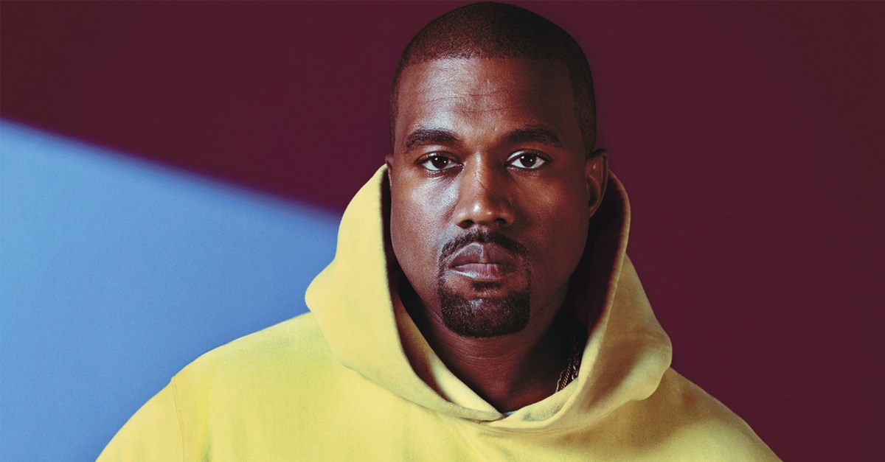

Kanye West a refusé de se produire à Coachella car il ne pouvait pas construire de dôme géant
Il y a quelques jours, nous apprenions que Kanye West était prévu comme headliner de l’édition 2019 de Coachella. Malheureusement pour les fans de Yeezy, un imbroglio à propos de la taille de la scène principale du festival californien avait mis un terme à ce projet. Révélées par TMZ, ces informations n’étaient en réalité que la partie immergée de l’iceberg. Un rapport publié par Billboard au cours des dernières heures détaille en effet avec précision les exigences extravagantes de Kanye West concernant sa scénographie.
Le 1er janvier dernier, soit deux jours avant l’annonce du line-up définitif du festival, Kanye West aurait appelé Paul Tollett, l’organisateur de Coachella, pour lui faire part d’une requête assez spéciale. Yeezy ne souhaitait en effet pas se produire sur la scène principale du festival. Le chicagoan voulait construire un dôme géant, créé par son collaborateur en design John McGuire et situé en plein milieu de l’Empire Polo Club.
Kanye West considérait que la main stage de Coachella était beaucoup trop petite pour son show, malgré le fait que les organisateurs du festival lui aient rappelé qu’elle était l’une des plus grandes d’Amérique du Nord. Pour rappel, Lady Gaga et Beyoncé s’étaient toutes deux produites dessus accompagnées par des centaines de danseurs. Goldenvoice, la société organisant Coachella, a alors avoué à Kanye West qu’il était tout simplement impossible de construire un dôme hi-tech dans le désert en seulement 4 mois.
Pour l’anecdote, Paul tollett aurait expliqué à Yeezy que son dôme contraignait l’organisation à modifier l’intégralité de l’agencement du festival, tout en supprimant de nombreuses zones de toilettes sèches. Selon Billboard, Kanye n’aurait pas du tout goûté à cet argument, déclarant même “qu’un artiste avec une vision créative ne devrait pas passer son temps à discuter de WC chimiques.” Les deux camps ont alors décidé de rompre les discussions. Moins de 24 heures plus tard, Ariana Grande était choisie en remplacement de Yeezy et cet imbroglio surréaliste déjà oublié par l’organisation de Coachella.